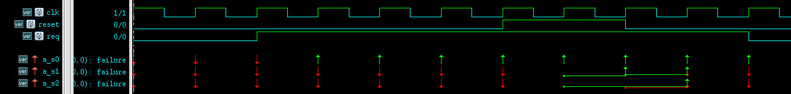
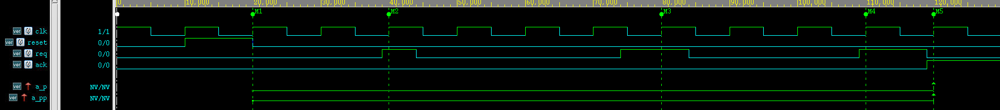
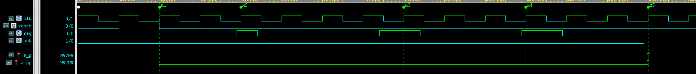

SVA目前有三种重复操作符，分别是[*n], [->n]和[=n], n可以是0,1,2,…,n或者$(即无限).
这三个操作符长得很像且区别只是在时间的连贯性上。它们有统一的书写格式:
(expression) [*n] / [->n] / [=n].
值得注意的是n＝0的特殊情况。n＝0时，相当于重复0次，也就是说要重复的表达式压根就不存在。而且n＝0时，重复操作符对相邻的‘＃＃x’操作符有“吞噬效果”，会使相邻的‘＃＃x’操作符无效。具体的后面有例子。
1. [*n] 操作符
这个操作符是三个中最直接也是灵活性最小的一个。它表示连续重复表达式n次，各重复表达式之间用 ##1 连接。
(a[*3]) ##1 b
相当于
(a ##1 a ##1 a) ##1 b
下面的例子说明n＝0, 1, 2时的具体表现情况
1 | sequence s0; |

- reset[*0]相当于什么都没有且把后面相邻的##1给取消掉了
- reset[*1]相当于只有reset，没有重复
- reset[*2]是正常的重复情况
2. [->n] 操作符
[->n]相当于把[*n]中的用于重复连接的##1变成##[0:$]，即在重复时间的连贯性上没有具体的长度要求。
a ##1 (b[->3]) ##1 c
相当于
a ##1 (b ##[0:$] b ##[0:$] b) ##1 c
具体例子
1 | property p(); |

3. [=n] 操作符
[=n] 和 [->n] 作用几乎一样，唯一的不同在于重复表达式的结尾多了一个##[0:$]，相当于在重复的结尾又添加了一个通配时间段。
a ##1 (b[=3]) ##1 c
相当于
a ##1 (b ##[0:$] b ##[0:$] b ##[0:$]) ##1 c
1 | property p(); |

4. 当n是范围值的时候
当n为范围值的时候，即[*a:b], [->a:b], [=a:b]，重复表达式会以‘或’操作的形式展开。
以[*a:b]为例，
x[*2:3]
相当于
(x ##1 x) or (x ##1 x ##1 x)